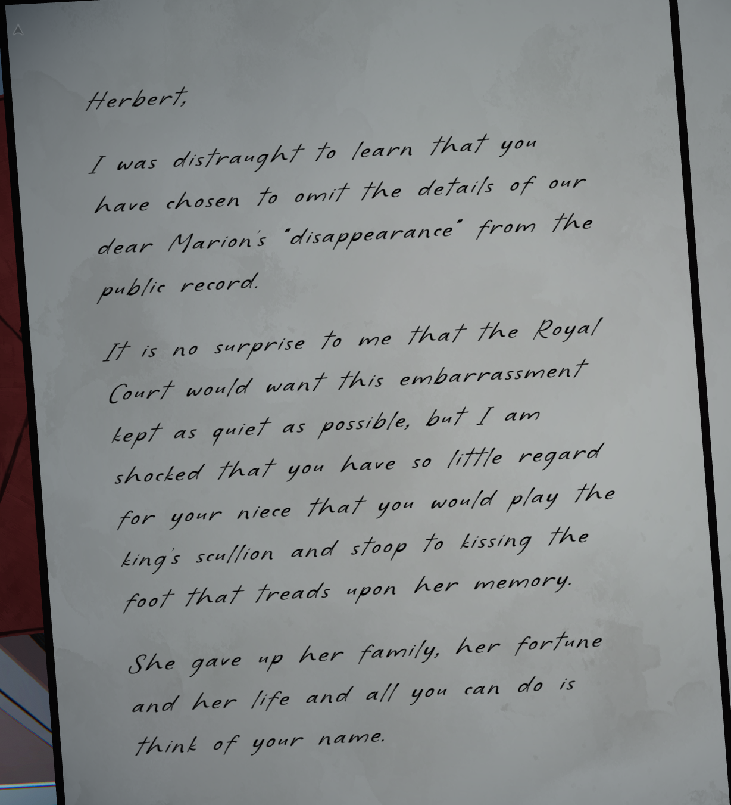
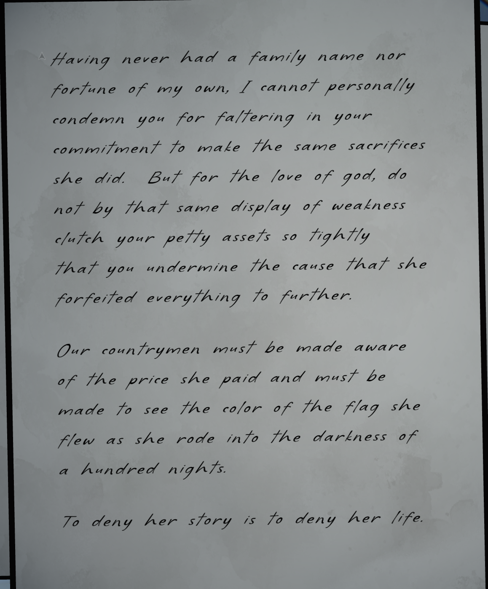
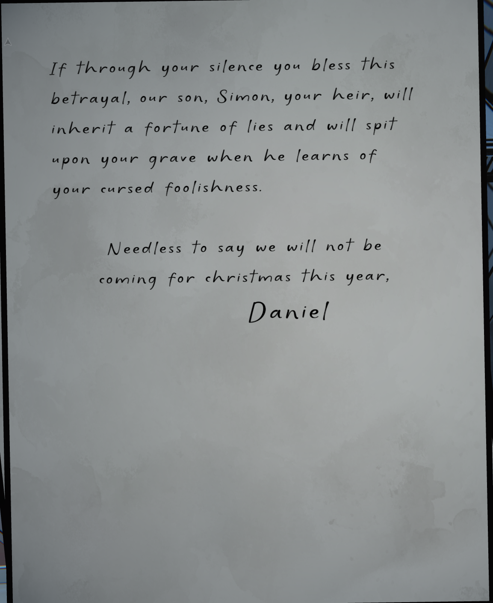
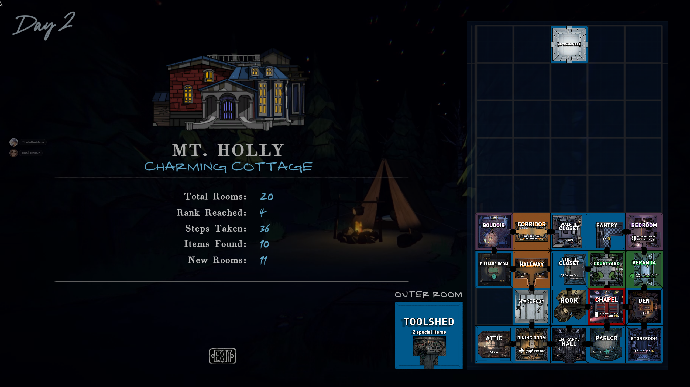

Turns out the code to the safe in the Boudoir is one of the most obvious fucking things in the planet.
Christmas.
The code was Christmas.
Cause there's a picture of christmas featuring the safe in the same exact room.
One of the many mysteries I had wondered about was the name of Simon's dad, and lo and behold, I have finally learned the answer to that question.



Daniel Jones. That's his name. Seems a well-meaning fellow if also completely unaware and a little daft.
Regardless that's 1 letter of 8 down. Wasn't expecting to have that happen so quickly. I wonder if the other safe codes are simarily hidden in plain sight.

This was an extremley unfortunate run. I was drowning in keys, gems, and items, but it didn't matter cause the game refused to let me past the fourth rank.
Oh well. It be like that oftentimes. At least I unlocked a safe.
Onto day 3.